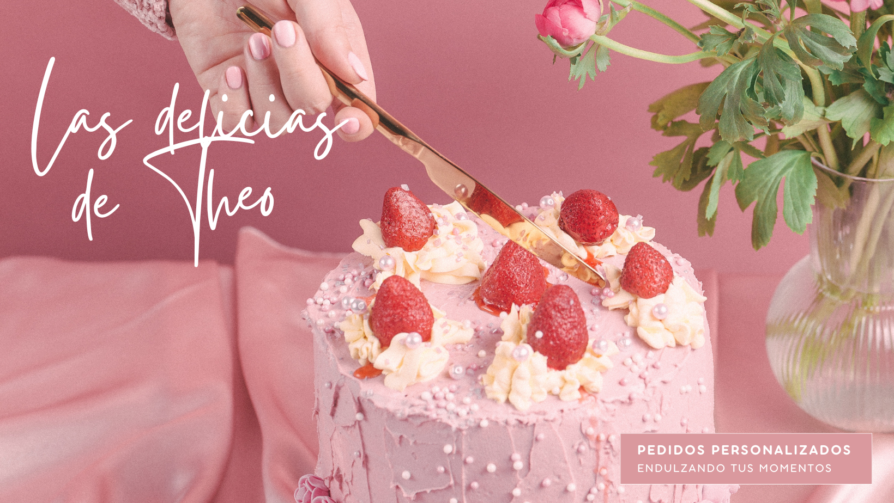

Bienvenidos a este pequeño emprendimiento hecho con amor
Desde 2022, en nuestro rincón dulce elaboramos repostería artesanal con ingredientes de calidad y mucho amor. Cada producto es hecho a mano, combinando sabores clásicos con toques creativos para ofrecerte una experiencia única. Trabajamos por pedido y realizamos delivery para que disfrutes de nuestros postres donde quieras. Ya sea para una celebración especial o para darte un gusto, tenemos el dulce perfecto para vos.